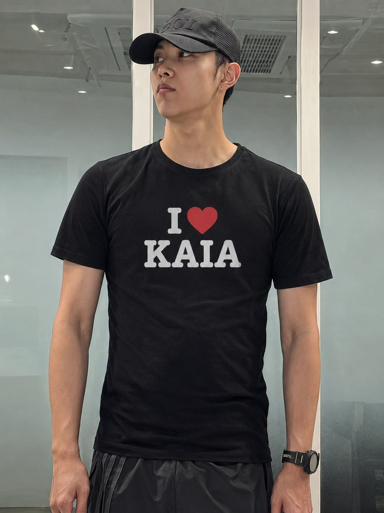
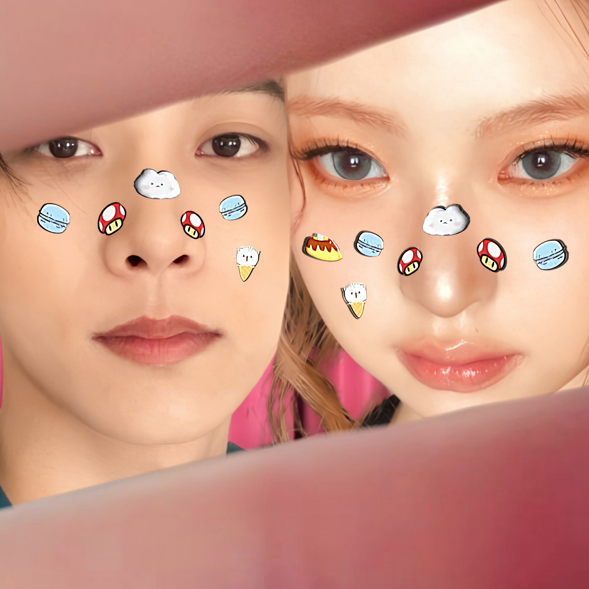
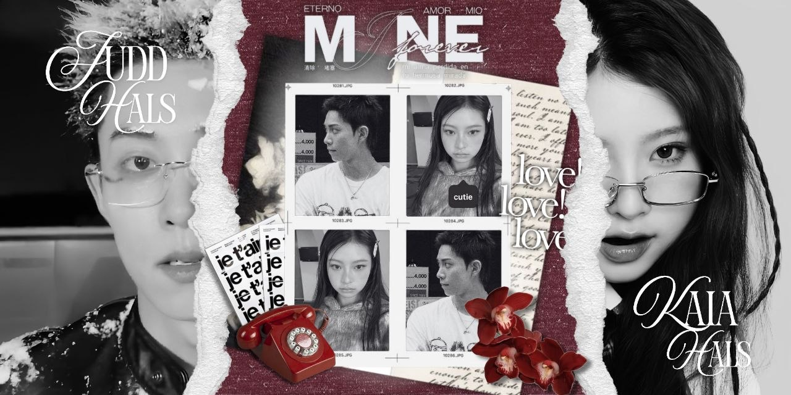
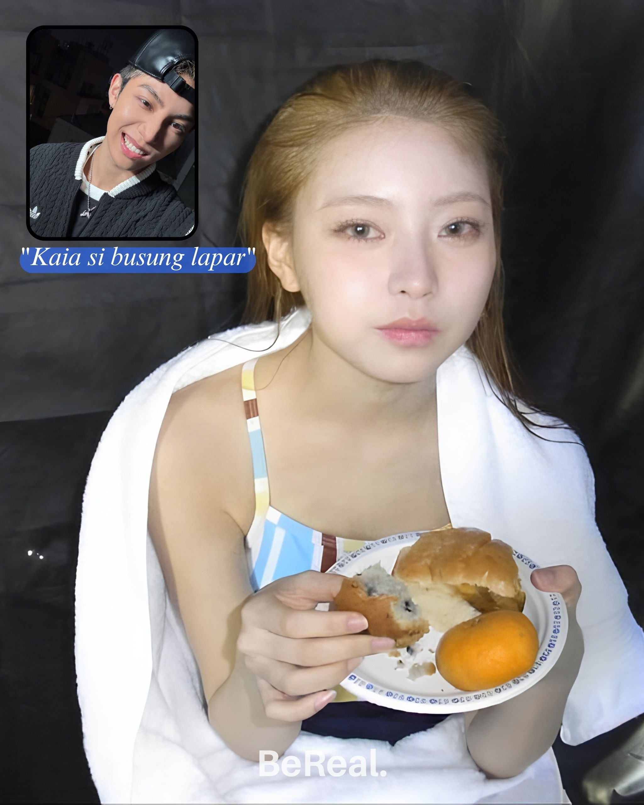
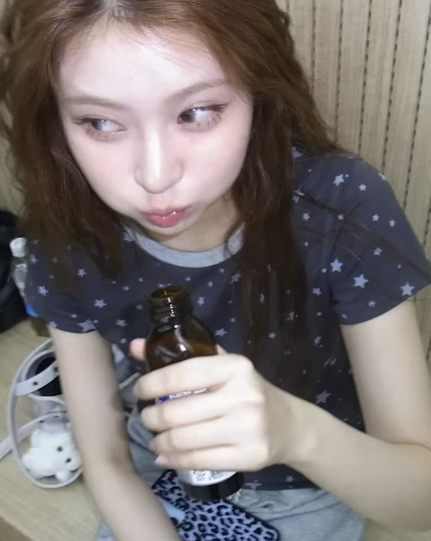
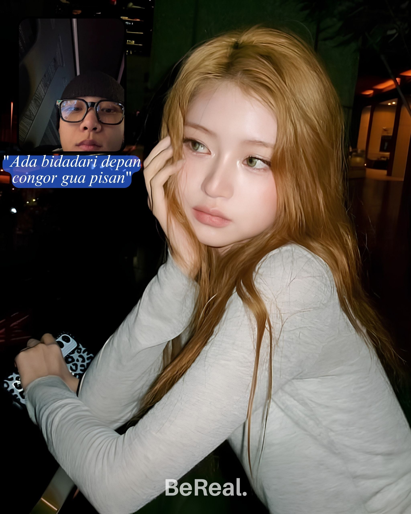

Sayang,
Dua bulan mungkin singkat bagi orang lain, tapi menurutku setiap harinya sama kamu
adalah bab baru yang paling indah. Terima kasih sudah hadir, tertawa, dan bertahan
di setiap cerita kita.
Kali ini, izinkan aku berbisik dengan suara yang lahir dari relung terdalam, dari
sudut hati yang paling gulita, "Terima kasih sudah menemaniku, Kaia."
Jika dunia bertanya mengapa aku begitu menggenggammu, aku hanya akan tersenyum
dan kembali berbisik, "sebab Kaia bukan sekadar kekasih, ia adalah rumah bagi
jiwa yang selama ini mengembara, dan aku tak pernah menyesal pulang."
Selamat kembali memperingati hari jadi, Sayang. ♥️
— Selamanya milikmu, JH.
Setiap tanggal tiga, untuk kamu
Kumpulan Lagu Untuk yang Terkasih

Bukti Judd sayang Kaia
K & J
Day one becomes "US"
Si cantik pemakan segala
K & J
K & JTulisan-tulisan yang lahir karena kamu